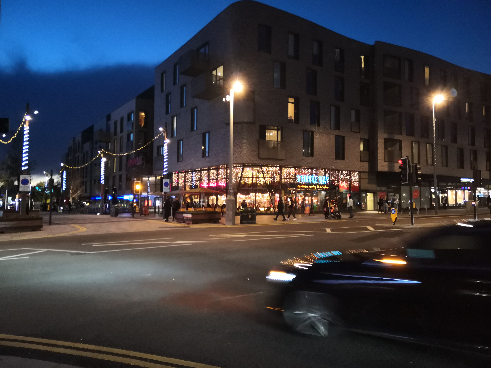

<!DOCTYPE html>
<html lang="en"></html>
<head>
    <meta charset="UTF-8">
    <title>London life by Michal Werner</title>
    <link rel="stylesheet" href="./style.css">
</head>
<body>
    <div class="red">
        <div class="green">
            <div class="yellow">
                <div class="black">
                    <a href="./city.html">City</a>
                    <a href="./nature.html">Nature</a>
                    <a href="./streetart.html">Street art</a>  
                    
                </div>
                <div class="grey">
                <h1>London life by Michal</h1>
                </div>                
            </div>
        </div>
        <div class="blue">
        	<div class="first">
            	London is the capital and largest city of England and the United Kingdom. The city stands on the River Thames in the south-east of England, at the head of its 50-mile estuary leading to the North Sea. London has been a major settlement for two millennia. Londinium was founded by the Romans. The City of London, London's ancient core and financial centre − an area of just 1.12 square miles and colloquially known as the Square Mile − retains boundaries that closely follow its medieval limits. London is one of the world's most important global cities and has been called the world's most powerful, most desirable, most influential, most visited, most expensive, sustainable, most investment-friendly, and most-popular-for-work city. It exerts a considerable impact upon the arts, commerce, education, entertainment, fashion, finance, healthcare, media, professional services, research and development, tourism and transportation.
            	</div>
            	
            	<div class="first">            
            London ranks 26th out of 300 major cities for economic performance. It is one of the largest financial centres and has either the fifth- or sixth-largest metropolitan area GDP. It is the most-visited city as measured by international arrivals and has the busiest city airport system as measured by passenger traffic. It is the leading investment destination, hosting more international retailers than any other city. As of 2020, London has the second-highest number of billionaires of any city in Europe, after Moscow. In 2019, London had the highest number of ultra high-net-worth individuals in Europe. London's universities form the largest concentration of higher education institutes in Europe, and London is home to highly ranked institutions such as Imperial College London in natural and applied sciences, and the London School of Economics in social sciences. London has a diverse range of people and cultures, and more than 300 languages are spoken in the region. Its estimated mid-2018 municipal population (corresponding to Greater London) was 8,908,081, the third-most populous of any city in Europe and accounts for 13.4% of the UK population. 
            	</div>
            	
            	<div class="first">           
            London's urban area is the third most populous in Europe, after Moscow and Paris, with 9,787,426 inhabitants at the 2011 census. The London commuter belt is the second-most populous in Europe, after the Moscow Metropolitan Area, with 14,040,163 inhabitants in 2016. London contains four World Heritage Sites: the Tower of London; Kew Gardens; the site comprising the Palace of Westminster, Westminster Abbey, and St Margaret's Church; and the historic settlement in Greenwich where the Royal Observatory, Greenwich defines the Prime Meridian (0° longitude) and Greenwich Mean Time. Other landmarks include Buckingham Palace, the London Eye, Piccadilly Circus, St Paul's Cathedral, Tower Bridge, Trafalgar Square and The Shard. London has numerous museums, galleries, libraries and sporting events. These include the British Museum, National Gallery, Natural History Museum, Tate Modern, British Library and West End theatres. The London Underground is the oldest underground railway network in the world.
            	</div>
        </div>
        <div class="purple">
            <!--  -->
            
            
            
        </div>
    </div>
    </div>
</body>
</html>
